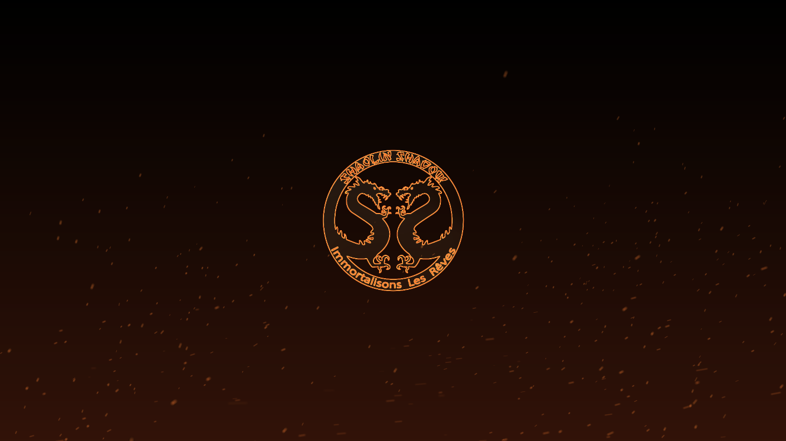
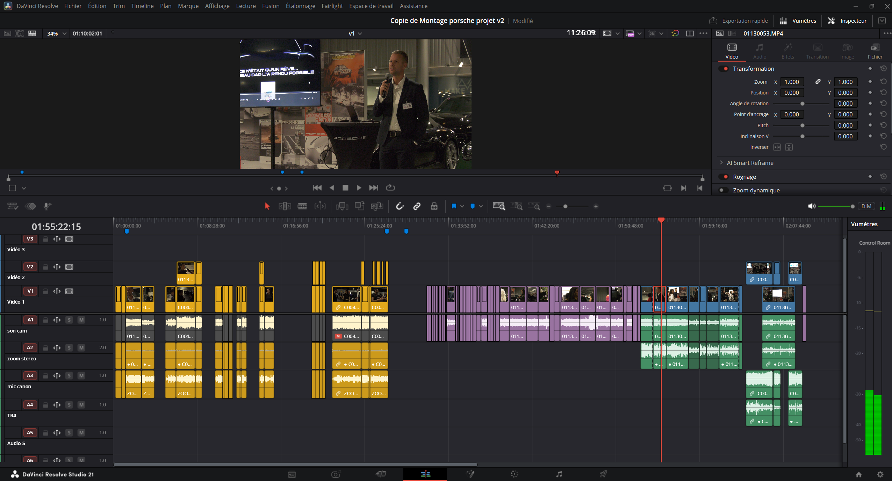

Je tiens à remercier l'ensemble de l'association Shaolin Shadow pour son accueil chaleureux pendant ces six semaines de stage. Je remercie tout particulièrement mon maître de stage Michel Nogara, l'un des fondateurs de l'association, pour ses conseils avisés et la confiance qu'il m'a accordée dès le premier jour. Je remercie également l'ensemble des bénévoles de Shaolin Shadow pour leur bonne humeur constante et pour m'avoir permis de découvrir de l'intérieur le fonctionnement d'une association audiovisuelle, avec ses forces, ses contraintes et sa richesse humaine. Leur accueil a été immédiatement bienveillant, et si j'étais resté plus longtemps, certains collègues seraient sans doute devenus des amis.
Dans le cadre de mon Bachelor Réalisateur Monteur, orienté vers la production et le montage vidéo, j'ai effectué un stage de six semaines au sein de l'association Shaolin Shadow à Grenoble, en tant que monteur vidéo. Ce stage s'inscrit dans une démarche de professionnalisation, visant à mettre en pratique les compétences théoriques acquises durant ma formation et à les confronter aux exigences du monde professionnel.
Ma formation m'a permis d'acquérir les bases techniques du montage vidéo, du motion design, de l'ingest, de la gestion des proxys et des exports. J'ai également eu l'occasion de mener des projets concrets, comme le montage d'un événement (le rassemblement Porsche organisé par Shaolin Shadow) et la réalisation de la showreel annuelle de l'association pour l'année 2025. Ces expériences m'ont conforté dans mon aspiration à devenir monteur vidéo et réalisateur de documentaires. Toutefois, je ressentais le besoin de confronter ces apprentissages à un environnement professionnel plus exigeant, où la rigueur, la méthode et le travail en équipe priment sur la simple maîtrise technique.
Le choix de Shaolin Shadow répondait à deux motivations principales. D'une part, l'association est reconnue dans le paysage audiovisuel grenoblois pour la qualité de ses productions et son engagement en faveur de l'accès à l'audiovisuel pour tous. D'autre part, ce stage devait me permettre de confirmer mon goût pour le montage vidéo dans un contexte plus structuré que celui de mes projets scolaires habituels. Je souhaitais notamment apprendre à travailler dans le cadre d'une production collective, où plusieurs personnes peuvent être amenées à intervenir sur un même projet, et où la normalisation des méthodes de travail est essentielle.
Le métier de monteur vidéo est aujourd'hui en pleine évolution. Les habitudes de consommation du public se tournent de plus en plus vers des contenus courts et dynamiques, ce qui impose aux monteurs de repenser leur rythme et leur narration. Par ailleurs, l'intelligence artificielle fait son entrée dans les logiciels de post-production. Si l'IA ne remplacera jamais un monteur, car le montage est avant tout un acte de création et d'interprétation du réel, elle modifie en profondeur les méthodes de travail en automatisant certaines tâches répétitives. Le monteur de demain sera davantage un chef d'orchestre, un second réalisateur qui donne une perspective nouvelle aux séquences tournées et qui collabore étroitement avec le réalisateur pour atteindre une vision commune. Ce stage m'a précisément permis d'explorer cette dimension artistique et collaborative du métier.
Les associations audiovisuelles jouent un rôle crucial dans le paysage culturel français. Malgré des budgets souvent limités, elles parviennent à produire des œuvres de qualité grâce à l'engagement de bénévoles passionnés. Elles constituent des tremplins essentiels pour des personnes sans bagage technique ni moyens financiers, mais animées par la seule motivation de découvrir et de pratiquer les métiers de l'audiovisuel. Shaolin Shadow incarne parfaitement cet esprit.
Ce rapport reviendra dans un premier temps sur la présentation de l'association Shaolin Shadow, son histoire, son organisation, ses moyens et son école de cinéma « Ça Tourne ! ». Dans un second temps, je détaillerai les missions qui m'ont été confiées, les difficultés rencontrées et les compétences que j'en retire.
Shaolin Shadow est une association loi 1901 dédiée à l'audiovisuel, fondée en 2004 à Grenoble. Le nom de l'association résume à lui seul l'état d'esprit qui anime ses membres. La référence aux moines Shaolin évoque la rigueur, l'accomplissement de soi, la transmission des savoirs et le partage. Le terme Shadow rend hommage aux techniciens du cinéma, ces artistes de l'ombre qui mettent les comédiens en lumière. Ce double héritage, à la fois spirituel et technique, imprègne toutes les actions de l'association.
Créée à une époque où l'accès au matériel audiovisuel professionnel était encore très coûteux et réservé à une élite, Shaolin Shadow a voulu dès ses débuts démocratiser la pratique du cinéma et de la vidéo. L'association s'est rapidement imposée comme une référence associative dans le paysage grenoblois, avant d'étendre progressivement son activité jusqu'en Île-de-France, notamment à Ivry-sur-Seine et aujourd'hui à La Courneuve.
Depuis sa création, Shaolin Shadow a connu plusieurs étapes marquantes. Dans les premières années, l'association s'est concentrée sur la production de courts-métrages et de clips, tout en développant des ateliers de formation.
Ces récompenses témoignent de la qualité du travail fourni par l'association et de sa capacité à s'imposer dans un secteur très concurrentiel.
Aujourd'hui, Shaolin Shadow réunit une vingtaine de bénévoles réguliers, auxquels s'ajoutent de nombreux intervenants ponctuels et stagiaires. L'association a réalisé à ce jour 79 projets, qu'il s'agisse de courts-métrages, de clips, de captations ou de contenus institutionnels, et a remporté 4 prix. Elle est soutenue par des subventions publiques et privées, notamment les CAF de l'Isère et du Val-de-Marne durant six ans, Grenoble Alpes Métropole, la Préfecture de l'Isère, le Département de l'Isère et la Ville d'Ivry-sur-Seine. En 2025, la ville de La Courneuve et le département de la Seine-Saint-Denis rejoignent les partenaires de l'association, ce qui témoigne de son rayonnement croissant.
En tant qu'association loi 1901, Shaolin Shadow est une structure à but non lucratif. Sa gouvernance est assurée par un bureau élu en assemblée générale, composé d'un président, d'un trésorier et d'un secrétaire. Les décisions importantes sont prises collectivement, dans un esprit de démocratie participative.
L'objectif affiché de Shaolin Shadow est de donner accès à l'audiovisuel au plus grand nombre. Cette mission se décline autour de deux axes complémentaires : la création et la diffusion d'œuvres audiovisuelles, et la formation de ses membres et du public aux différents métiers de l'audiovisuel. Le savoir-être, le savoir-faire et le savoir-vivre sont les valeurs fortes de l'équipe, qui se retrouvent au cœur des formations et des réalisations.
Production et diffusion d'œuvres audiovisuelles : clips, courts-métrages, captations, contenus institutionnels et reportages. Chaque projet est porté par un réalisateur ou un chef de projet, avec une équipe technique dédiée.
Transmission des savoirs aux membres et au public, via l'école « Ça Tourne ! » et des ateliers accessibles. Objectif : rendre l'audiovisuel accessible à tous, sans barrière financière ni prérequis technique.
Shaolin Shadow produit des contenus très variés, qui reflètent la diversité de ses membres et de ses publics. Les clips musicaux constituent une part importante de son activité, en particulier dans le milieu du rap et des musiques urbaines, en phase avec les réalités sociales des quartiers populaires. Les courts-métrages abordent des thématiques fortes comme l'identité, l'exclusion, l'espoir ou la résistance, et ont valu à l'association des récompenses dans des festivals. L'association produit également des contenus institutionnels, des reportages, des captations d'événements et des projets de médiation culturelle.
La mission sociale de Shaolin Shadow est essentielle. L'association propose des formations à des tarifs très accessibles, ne couvrant que les frais élémentaires, afin de ne pas exclure les publics défavorisés. Cette politique tarifaire permet à des jeunes de quartiers populaires, à des demandeurs d'emploi ou à des personnes en reconversion de se former aux métiers de l'audiovisuel sans barrière financière. C'est une véritable action de démocratisation culturelle.
Shaolin Shadow a développé une véritable école de cinéma, intitulée « Ça Tourne ! », qui propose une formation unique, accessible à tous et professionnalisante. L'école accueille des candidats dès l'âge de 16 ans, qu'ils soient débutants ou déjà initiés. L'objectif est de donner des bases solides, quelle que soit la spécialité de prédilection : acting, réalisation, gestion de production, technicien vidéo, ainsi que les connaissances générales de l'industrie du cinéma.
L'enseignement se distingue par plusieurs atouts majeurs : un apprentissage pratique important, un enseignement théorique dispensé en parallèle, des tournages encadrés par des professionnels, la validation du parcours par un certificat après la réalisation d'une fiction, et un lot d'expériences riches pour densifier le CV des élèves.
Deux formats d'enseignement sont proposés. Le Magistral, à Grenoble et dès 18 ans, est un enseignement complet sur deux ans, cinq jours sur sept, avec réalisation d'un long-métrage en fin de parcours. Il propose deux sections : Technique de Réalisation et Gestion de Production. Le Cours Hebdomadaire, à Grenoble et à La Courneuve dès 16 ans, est un enseignement pratique et théorique les mercredis et dimanches, en deux sections : Technique de Réalisation et Acting, ce dernier étant basé sur les méthodes de Stanislawski et de l'Actor's Studio.
L'école fonctionne avec des professionnels du secteur qui interviennent régulièrement pour encadrer les élèves et leur transmettre leur expérience de terrain. Les formations sont conçues pour répondre aux besoins du marché et préparer les étudiants à une insertion rapide dans le monde professionnel. Le taux de réussite et la satisfaction des anciens élèves sont des indicateurs qui confirment la pertinence de cette approche pédagogique.
L'association fonctionne grâce à l'engagement d'une vingtaine de bénévoles réguliers, auxquels s'ajoutent des intervenants extérieurs, des stagiaires et des élèves en formation. Le bureau, élu chaque année, assure la coordination générale. Les projets sont généralement inventés par les élèves ou mandatés par des clients extérieurs, et sont portés par un réalisateur ou un chef de projet qui constitue une équipe technique. Les réunions et les échanges se déroulent de manière conviviale, et la communication interne se fait par des groupes de discussion en ligne et des outils collaboratifs.
Cette structure légère permet une grande réactivité et une capacité d'adaptation aux demandes des clients et aux opportunités qui se présentent. Cependant, elle repose entièrement sur le bénévolat, ce qui peut parfois entraîner des variations dans la disponibilité des membres et dans la continuité des projets. L'association doit donc gérer ces contraintes tout en maintenant un niveau de qualité élevé dans ses productions.
Les moyens matériels de Shaolin Shadow reflètent son fonctionnement associatif et son budget limité. L'association dispose d'un parc de caméras, d'objectifs, d'éclairages et de matériel audio, mutualisé entre les projets. Les postes de montage sont équipés d'ordinateurs dont la configuration est modeste : processeur Intel Core i5, 16 Go de RAM, carte graphique GTX 1000 de l'ancienne génération. Cette configuration est insuffisante pour un montage en 4K et rend le travail difficile. Les logiciels utilisés sont la suite Adobe : Premiere Pro, After Effects, Audition, Media Encoder, Photoshop et Illustrator. Le stockage est également un point sensible, les disques durs internes étant souvent saturés, ce qui oblige à une gestion rigoureuse des fichiers.
Malgré ces contraintes, l'association parvient à produire des œuvres de qualité grâce à la compétence de ses membres et à leur capacité à optimiser les ressources disponibles. La mise en place de méthodes de travail efficaces, comme l'utilisation de fichiers proxy pour alléger les projets, permet de pallier les faiblesses matérielles.
Shaolin Shadow a su tisser des liens solides avec de nombreux partenaires institutionnels et privés, parmi lesquels la Ville d'Ivry-sur-Seine, les Allocations Familiales, Cap Berriat, New's FM, Grenoble Métropole, l'association Bruits de Court, La Base, Femmes Initiatives, ainsi que la Ville de La Courneuve et le département de la Seine-Saint-Denis à partir de 2025. Les récompenses obtenues dans des festivals prestigieux comme Cannes, Luchon ou Grenoble témoignent de la qualité des productions de Shaolin Shadow et contribuent à sa notoriété.
Ces partenariats sont essentiels pour le financement des projets et pour la reconnaissance de l'association dans le paysage audiovisuel. Ils permettent également d'ouvrir des portes vers de nouveaux publics et de renforcer l'ancrage territorial de Shaolin Shadow, notamment dans les quartiers populaires où elle mène des actions de médiation culturelle.
J'ai commencé mes recherches de stage au début du mois de janvier, en ciblant principalement des structures audiovisuelles grenobloises. J'ai envoyé une dizaine de candidatures spontanées et répondu à plusieurs offres publiées sur les plateformes spécialisées. Les refus se sont succédé, souvent pour des raisons de capacité d'accueil ou de période non compatible. J'ai alors élargi mes recherches aux associations et aux petites structures, ce qui m'a permis de découvrir Shaolin Shadow.
Le contact avec l'association s'est fait par l'intermédiaire d'une connaissance commune. J'ai rapidement été convié à un entretien informel, au cours duquel j'ai pu présenter mes compétences et ma motivation. Mon maître de stage a été sensible à mon parcours et à ma volonté de m'investir dans des projets concrets. L'association cherchait justement un stagiaire pour renforcer son équipe de montage sur plusieurs projets en cours.
Ce contexte de recherche m'a appris la persévérance et l'importance de diversifier ses approches pour trouver une opportunité. Sans ce stage, je n'aurais probablement pas découvert le monde associatif et sa richesse en termes de projets et de collaborations.
J'ai occupé pendant six semaines le poste de monteur vidéo. Mon maître de stage, l'un des fondateurs, était présent et disponible pour me conseiller, tout en me laissant une grande autonomie. J'ai rapidement compris sa vision artistique, ce qui m'a permis de limiter les retouches. Mon rythme hebdomadaire était de 35 heures, du lundi au vendredi, de 8h à 17h, consacré presque exclusivement au montage, avec occasionnellement des missions d'assistant régie.
Les projets étaient variés : clips pour des artistes de la scène rap locale, séquences pour un court-métrage documentaire, montage de la showreel annuelle 2025, et montages d'événements comme le rassemblement Porsche. L'intégration dans l'équipe a été très positive, l'accueil chaleureux. J'ai collaboré avec plusieurs dérusheurs et avec mon maître de stage pour les aspects visuels de l'association.
Chaque journée débutait par un point rapide avec mon maître de stage pour définir les priorités du jour. Ensuite, je me plongeais dans le montage, en veillant à respecter les délais et les consignes artistiques. Les échanges étaient réguliers et constructifs, ce qui favorisait une progression continue dans mon travail.
Le monteur est le second réalisateur, celui qui donne le rythme, crée des émotions et construit une narration à partir de la matière brute. La chaîne de montage couvre plusieurs étapes : réception et organisation des rushes, montage brut, montage fin, montage sonore, effets visuels, étalonnage, mixage final et export. J'ai couvert l'ensemble de ces étapes, à l'exception de l'étalonnage poussé, ce qui m'a permis d'appréhender la cohérence globale d'un projet.
Le métier exige à la fois des compétences techniques pointues et une sensibilité artistique. Le monteur doit être capable de comprendre l'intention du réalisateur et de la transcrire à travers le choix des plans, des transitions et du rythme. C'est un métier de compromis et de dialogue, où la collaboration est essentielle pour aboutir à un résultat satisfaisant.
Pour parfaire ma compréhension du métier, j'ai étudié les théories de plusieurs grands monteurs :
Le montage des attractions consiste à assembler des images-chocs qui, mises bout à bout, produisent un effet thématique et émotionnel chez le spectateur.
Jamais de coupe sans raison positive. Chaque plan doit justifier sa présence par rapport à celui qui le précède et à celui qui le suit.
Ma règle des Six classe les critères d'une bonne coupe : l'émotion d'abord, puis l'histoire, le rythme, l'eye-trace, la planéité et enfin l'espace 3D. L'émotion prime sur tout le reste.
Ces lectures ont profondément influencé ma pratique.
Parmi les projets qui m'ont été confiés, deux m'ont particulièrement marqué par leur nature et les compétences qu'ils ont mobilisées.
Pour la showreel annuelle de l'association, mon maître de stage m'a demandé de réaliser une animation différente pour chaque vidéo, en me laissant carte blanche sur le concept. J'ai choisi de créer un parchemin sur lequel apparaissaient les remerciements destinés aux associations partenaires, aux sponsors et aux différentes personnes ayant contribué au projet. Ce parchemin était ensuite consumé par les flammes, laissant apparaître le logo Shaolin Shadow, rouge incandescent, sur un fond de braises.
Pour réaliser cette animation, j'ai utilisé After Effects. La difficulté principale a été de créer un effet de combustion réaliste et de faire en sorte que la transition entre le parchemin et le logo soit fluide et spectaculaire. J'ai notamment utilisé un effet de distorsion sur les bords du parchemin pour simuler la consumation, ainsi qu'un effet de lumière sur les braises pour donner de la profondeur à l'ensemble. Le résultat final, bien que plus impressionnant en vidéo qu'en capture d'écran, est une animation dont je suis particulièrement fier. Le rendu aurait été encore plus saisissant avec l'utilisation du plugin Deep Glow, que je n'avais pas sur l'ordinateur utilisé pour la capture.
J'ai également réalisé deux autres variantes pour des projets distincts. Pour une vidéo de présentation, j'ai animé le logo Shaolin Shadow en métal, sur lequel un rayon de lumière venait balayer la surface, créant un effet de brillance réaliste. Pour l'école « Ça Tourne ! », j'ai reproduit en 3D le clap du logo existant. L'animation montrait le clap se fermer en tournant sur lui-même, puis disparaître dans un flux d'encre. Ces exercices m'ont permis d'explorer différentes techniques de motion design, allant de la simulation de matières à la 3D.

Ce projet m'a permis d'explorer des techniques avancées de motion design, notamment la gestion des effets de lumière, la simulation de matières et l'intégration d'éléments graphiques dans un environnement en mouvement. Il a également confirmé mon goût pour le travail sur les identités visuelles et les animations à fort impact émotionnel.
Le deuxième projet marquant a été le montage d'un événement organisé par Shaolin Shadow : un rassemblement Porsche. L'objectif était double : d'une part, trouver des sponsors parmi les grands groupes et sociétés réunis lors de l'événement ; d'autre part, donner de la visibilité au prochain film de l'association, dont la sortie était imminente. Le tournage avait été réalisé par les élèves de l'école « Ça Tourne ! ».
Mon travail a débuté par la synchronisation des pistes audio, une étape délicate car les prises de son provenaient de sources multiples. J'ai ensuite procédé au dérushage complet des rushes, découpant les passages les plus pertinents pour le montage final. Pour faciliter cette étape, j'ai utilisé un système de codage par couleurs dans DaVinci Resolve : chaque couleur correspondait à un type de contenu (interview, plan de coupe, discours, moments clés). Cette méthode m'a permis de visualiser rapidement la structure du projet et d'identifier les séquences à conserver.

J'ai également dû synchroniser deux caméras pour les interviews : une vue grand angle pour le plan large, et une vue plus serrée pour les plans rapprochés. Cette double synchronisation a demandé une attention particulière aux raccords de mouvement et de regard, afin de garantir la continuité visuelle malgré le changement de plan.
Ce projet m'a permis de me familiariser avec DaVinci Resolve, un logiciel que je connaissais moins que la suite Adobe, et de perfectionner ma méthode de dérushage, une compétence essentielle pour tout monteur professionnel.
Pour la showreel, j'ai reçu plusieurs heures de rushes issus d'une vingtaine de projets. J'ai dû visionner l'ensemble, sélectionner les moments les plus marquants et faire des choix rapides et efficaces. L'enjeu était de rassembler des fragments disparates pour transmettre une énergie commune, dictée par le tempo et le mood de la musique. J'ai dû faire des choix en fonction de la durée des plans, de leur colorimétrie et de leur valeur de plan. C'était un exercice de montage rythmique et émotionnel, très différent du montage narratif traditionnel.
J'ai utilisé des techniques de montage spécifiques comme les L-cut et les J-cut pour fluidifier les transitions, ainsi que le montage en pancake, une méthode qui consiste à superposer deux timelines pour comparer des séquences ou synchroniser des rushes. J'ai eu recours à des tranches de montage et à des coupes franches pour maintenir un rythme soutenu, et j'ai soigné les raccords de mouvement et de regard pour préserver la continuité visuelle malgré la diversité des sources.
Pour le montage sonore, j'ai utilisé Adobe Audition pour nettoyer les pistes, réduire le bruit, égaliser et ajouter des ambiances, en particulier pour les montages d'événements où le son était souvent dégradé. J'ai également réalisé des animations de motion design pour les intros et les outres des vidéos.
Enfin, les exports ont été réalisés en H.264, HD 1080p, à 25 images par seconde. Les ordinateurs peinaient à exporter, surtout avec des effets, ce qui allongeait considérablement les temps de rendu.
Au-delà de ces tâches techniques, j'ai également participé à des séances de réflexion sur la direction artistique des projets. Mon maître de stage sollicitait régulièrement mon avis sur les choix de montage, ce qui m'a permis de développer mon sens critique et ma capacité à argumenter mes décisions.
Les difficultés techniques ont été le principal défi de ce stage. La qualité audio des rushes était souvent insuffisante, avec des bruits de fond, du souffle ou des grésillements. J'ai dû utiliser les outils de correction d'Adobe Audition pour rattraper ces défauts, ce qui m'a pris un temps considérable mais m'a permis de maîtriser des outils que je ne connaissais que théoriquement.
Le stockage était également un problème récurrent. Les disques durs internes étaient constamment saturés, ce qui m'a obligé à adopter une gestion rigoureuse des fichiers, à archiver régulièrement sur des disques externes et à supprimer les fichiers temporaires.
La puissance des ordinateurs a été la contrainte la plus lourde. La configuration des postes était clairement sous-dimensionnée pour le montage en 4K et pour l'utilisation simultanée de plusieurs logiciels Adobe. Les freezes, les écrans noirs et les plantages étaient quotidiens, et je ne pouvais pas ouvrir Premiere Pro et After Effects en même temps. Pour pallier ces difficultés, j'ai systématiquement utilisé des fichiers proxy, des versions allégées des rushes qui permettent de monter fluidement sur des machines peu puissantes. Le rendu final se fait ensuite sur les fichiers originaux haute définition. Cette technique, bien que chronophage, est indispensable dans un environnement matériel limité. Face à l'accumulation de ces difficultés, j'ai dû terminer certains projets depuis mon domicile la dernière semaine, en utilisant mon propre ordinateur plus puissant.
Ces difficultés m'ont appris à ne jamais considérer les limites techniques comme des obstacles insurmontables. Dans le milieu associatif, comme dans de nombreuses structures à petit budget, il faut savoir faire avec des moyens limités. La créativité, la rigueur et l'adaptation peuvent compenser les lacunes techniques.
Sur le plan technique, j'ai renforcé ma maîtrise de la suite Adobe, notamment Premiere Pro, Audition, After Effects et Media Encoder, et j'ai découvert DaVinci Resolve pour le dérushage et l'étalonnage. Je suis désormais capable de gérer un projet de montage de bout en bout, du dérushage à l'export, en passant par le traitement audio, les effets et les transitions. J'ai également approfondi ma connaissance des formats, des codecs et des paramètres d'export. La pratique intensive des proxys m'a donné une maîtrise technique que je n'avais pas acquise en cours.
Sur le plan organisationnel, l'autonomie totale qui m'a été accordée m'a obligé à gérer seul mon temps, mes priorités et mes dossiers. J'ai appris à planifier mes journées, à respecter des délais, à communiquer sur l'avancement de mon travail. J'ai également développé une méthode rigoureuse pour organiser les fichiers, nommer les timelines et classer les versions successives. Cette rigueur est essentielle lorsque plusieurs personnes sont amenées à travailler sur un même projet : la normalisation des méthodes de travail évite les erreurs et les pertes de temps. C'est d'ailleurs l'un des principaux apprentissages de ce stage : j'ai compris qu'un bon monteur est aussi un bon organisateur.
Sur le plan humain et professionnel, travailler au sein d'une association m'a fait découvrir un mode de fonctionnement particulier, fondé sur le bénévolat, la passion et l'entraide. J'ai appris à collaborer avec des personnes de profils variés, à respecter les contraintes de chacun, à m'adapter à des rythmes et des exigences différentes. Le contact avec les réalisateurs et les commanditaires m'a permis de mieux comprendre les enjeux artistiques et commerciaux d'un projet audiovisuel. J'ai aussi pris conscience du rôle social et culturel des associations, qui permettent à des personnes sans ressources ni réseau d'accéder à des formations et à des expériences professionnalisantes. Cette dimension citoyenne m'a profondément marqué et conforte mon envie de m'investir dans des projets porteurs de sens.
Ce stage a pleinement répondu à mes attentes. J'ai vécu cette expérience comme une passion et un loisir, tout en restant sérieux et rigoureux. J'ai été agréablement surpris par la bonne cohésion d'équipe et l'ambiance conviviale qui régnait au sein de l'association. La principale surprise, plus mitigée, a été la limitation matérielle des postes de montage, qui m'a cependant appris à m'adapter et à trouver des solutions créatives.
De cette expérience, je retire trois enseignements majeurs :
Le montage vidéo ne se limite pas à la créativité : il exige une organisation méthodique des fichiers, des timelines et des versions. Une bonne normalisation évite les erreurs quand plusieurs personnes travaillent sur un même projet.
Chaque projet est unique et nécessite une approche personnalisée. Le monteur apporte sa sensibilité et son regard singulier. Le montage est un acte de création à part entière, pas une simple exécution technique.
Un monteur ne travaille pas dans son coin : il doit constamment se demander comment son travail sera perçu. Qu'est-ce qui capte l'attention ? Qu'est-ce qui suscite une émotion ? Comment raconter une histoire en quelques secondes ? Ces questions sont au cœur du métier.
Ce stage conforte totalement mon choix d'orientation. J'ai découvert que le montage vidéo est une activité que je peux pratiquer avec passion et sérieux, sans jamais me lasser. L'aspect créatif, technique et collaboratif du métier me correspond parfaitement. J'ai découvert que les trois domaines du montage son, de l'étalonnage et du motion design m'intéressent profondément. Si je reconnais que sur les grosses productions chaque poste a sa spécialité, je préfère rester généraliste et pouvoir passer par toutes les étapes d'un projet de A à Z. La satisfaction de voir un projet aboutir du début à la fin, d'avoir contribué à chaque étape, est immense. Je souhaite donc rester un monteur polyvalent, avec une orientation particulière vers le montage et le motion design, qui sont mes domaines de prédilection.
Mes prochaines étapes consistent à me lancer en tant que vidéaste auto-entrepreneur, tout en poursuivant mes études. Je souhaite me spécialiser dans le montage pour les formats longs comme les films et les documentaires, tout en continuant à réaliser des projets amateurs qui me permettent d'exprimer ma créativité. Les secteurs qui m'attirent sont variés, mais je suis particulièrement intéressé par le web et les contenus digitaux, qui sont en pleine expansion et offrent de nombreuses opportunités. Cela ne signifie pas que je ferme la porte aux autres secteurs comme le cinéma, la télévision, le clip ou l'institutionnel, qui m'intéressent également. À court terme, je souhaite travailler en freelance à côté de mes études pour me constituer un portfolio et gagner en expérience. À plus long terme, si l'occasion se présente, je serais intéressé par un poste en entreprise dans le secteur de la production audiovisuelle.
Le monde de l'audiovisuel évolue rapidement, notamment sous l'influence de l'intelligence artificielle et des nouvelles plateformes de diffusion. Je suis convaincu que l'IA restera un outil au service du monteur, et non un remplaçant. Elle permettra d'automatiser certaines tâches répétitives, de gagner du temps et de se concentrer sur les aspects créatifs. Mais l'âme, le regard et l'avis humain du monteur resteront cruciaux pour donner vie à un projet. La créativité, le sens du rythme, la compréhension des émotions humaines sont des qualités que l'IA ne pourra pas reproduire. Je compte m'adapter à ces évolutions avec curiosité et enthousiasme, en testant des outils innovants et en participant à des bêta-tests de projets.
Ce stage m'a appris qu'un environnement de travail contraint n'empêche pas la production d'un travail de qualité. Ce qui compte, c'est la méthode, la rigueur et la créativité. C'est avec cette conviction que j'aborde la suite de mon parcours, riche de cette expérience formative et humaine.